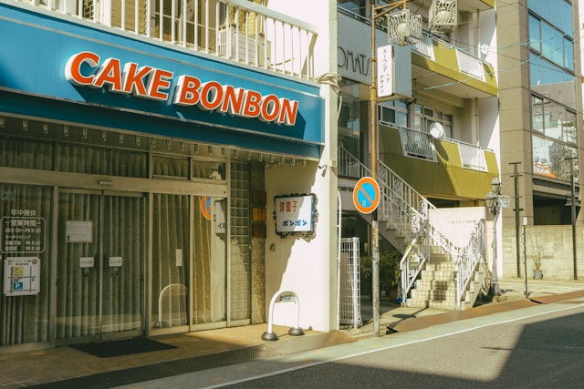

float

국회의 정기회는 법률이 정하는 바에 의하여 매년 1회 집회되며, 국회의 임시회는 대통령 또는 국회재적의원 4분의 1 이상의 요구에 의하여 집회된다. 대통령은 국가의 독립·영토의 보전·국가의 계속성과 헌법을 수호할 책무를 진다. 정부는 회계연도마다 예산안을 편성하여 회계연도 개시 90일전까지 국회에 제출하고, 국회는 회계연도 개시 30일전까지 이를 의결하여야 한다.
float: left
국회의 정기회는 법률이 정하는 바에 의하여 매년 1회 집회되며, 국회의 임시회는 대통령 또는 국회재적의원 4분의 1 이상의 요구에 의하여 집회된다. 대통령은 국가의 독립·영토의 보전·국가의 계속성과 헌법을 수호할 책무를 진다. 정부는 회계연도마다 예산안을 편성하여 회계연도 개시 90일전까지 국회에 제출하고, 국회는 회계연도 개시 30일전까지 이를 의결하여야 한다.
float: right
국회의 정기회는 법률이 정하는 바에 의하여 매년 1회 집회되며, 국회의 임시회는 대통령 또는 국회재적의원 4분의 1 이상의 요구에 의하여 집회된다. 대통령은 국가의 독립·영토의 보전·국가의 계속성과 헌법을 수호할 책무를 진다. 정부는 회계연도마다 예산안을 편성하여 회계연도 개시 90일전까지 국회에 제출하고, 국회는 회계연도 개시 30일전까지 이를 의결하여야 한다.